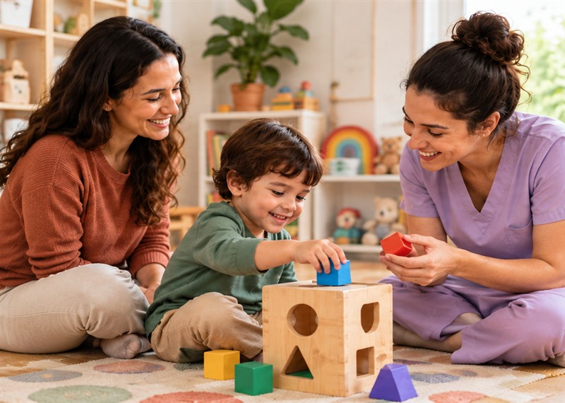
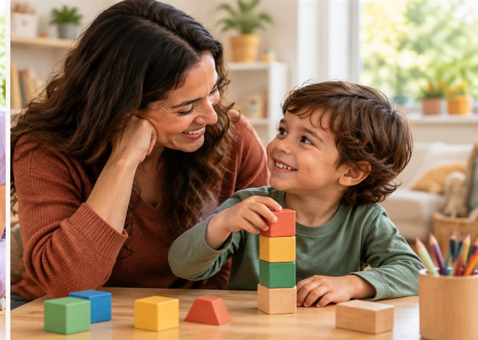

Acolher
Escutar a criança
e a família.
Um acompanhamento construído em diálogo com a família.
Escutar a criança
e a família.
Conhecer interesses
e necessidades.
Definir objetivos
em conjunto.
Revisitar o caminho
e ajustar o cuidado.
INFÂNCIAS REAIS.
POSSIBILIDADES MAIS LONGE.
Uma avaliação atenta às habilidades, aos interesses e às necessidades da criança.


Conte suas dúvidas e conheça os próximos passos.
Falar com a equipe